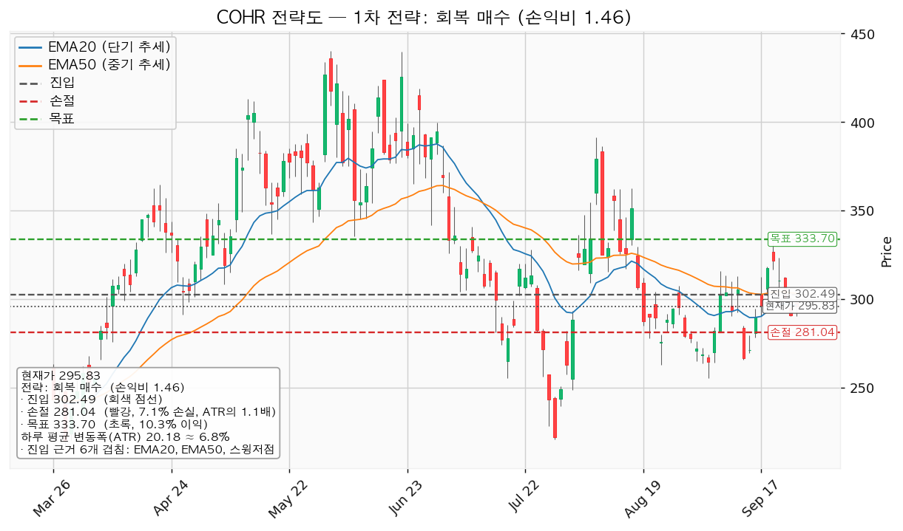
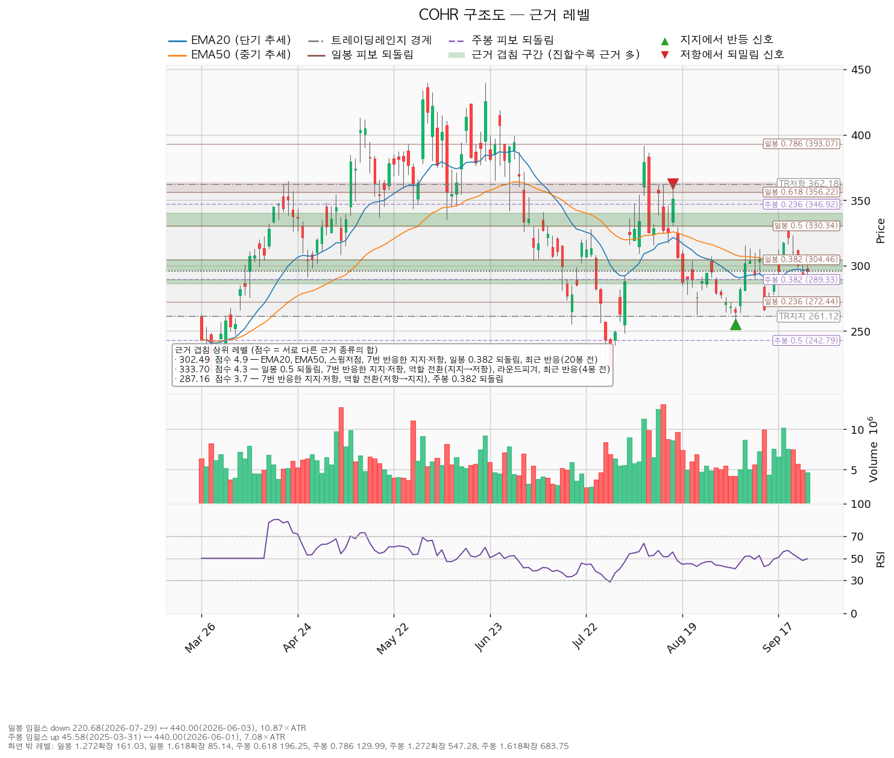
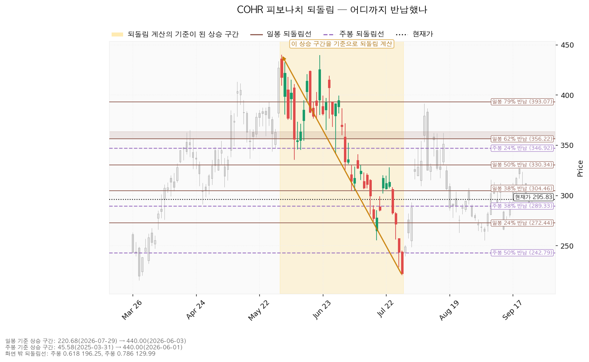
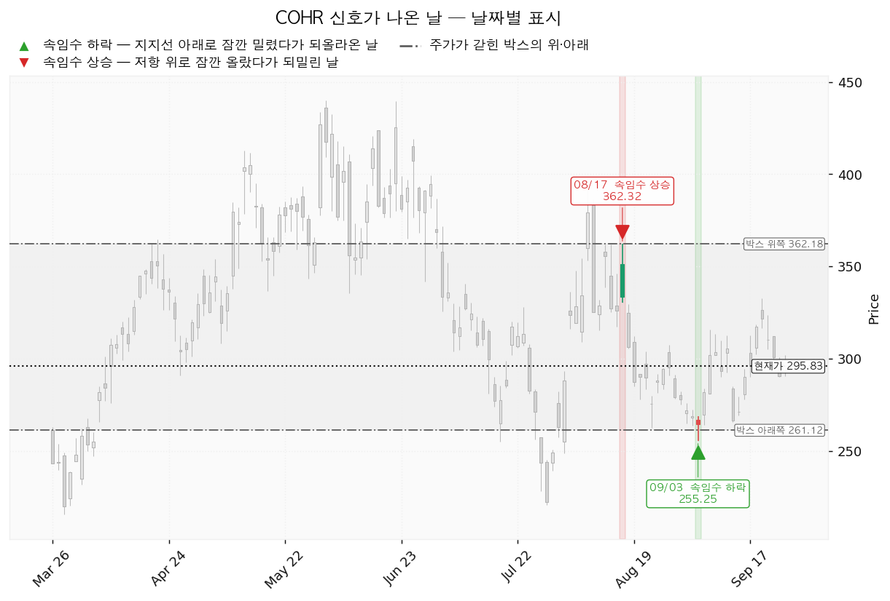

코히어런트(COHR)는 데이터센터·통신망에 들어가는 광트랜시버와 레이저, 화합물 반도체 소재를 만드는 미국 기업입니다.
기준은 2026-09-25 종가 295.83달러입니다. 장부에 COHR 체결 기록이 없고 관심종목(미보유)이라 전략도에 평단선은 없습니다.
| 구분 | 가격 | 판정 방식 | 현재 상태 | 현재가 대비 |
|---|---|---|---|---|
| 회복선 (진입 조건) | 302달러 | 일봉 종가 회복 후 되돌림에서 지지되는지 | 회복 대기 | +2.25% |
| 집행 손절 | 281달러 | 닿으면 매도 — 302달러 진입이 성립한 경우에만 유효하며 미진입 상태에서는 의미가 없습니다 | 미진입 | -5.00% |
| 관망 종료 기준 | 286달러 또는 2026-11-05 실적 | 일봉 종가 이탈 시 매수 계획 종료, 새 리포트 대기 | 유지 중 | -3.30% |
| 확인선 (상승 확정) | 334달러 | 일봉 종가 돌파 후 되돌림 지지 확인 | 미돌파 | +12.80% |
| 폐기선 (구조) | 261달러 | 위 박스의 3단 조건 — 하루 변동폭의 1.72배 거리 | 유지 중 | -11.73% |
| 항목 | 회복 매수 |
|---|---|
| 엣지 | 모멘텀, 회복 확인형(가중치 1.0) — 저항을 종가로 되찾으면 그 방향이 이어진다는 전제. 자주 틀리고 소수가 크게 맞는 유형(일반적 성격이며 이 엔진에서 측정한 값이 아닙니다) |
| 진입 | 302달러 — 근거 6개 겹침: EMA20, EMA50, 스윙저점, 7번 반응한 지지·저항, 일봉 38% 되돌림, 20봉 전 반응 (구간 297~304) |
| 집행 손절 | 281달러 — 겹침 구간(286~289달러) 바로 아래. 손절 폭 -7.09%, 1.06 ATR |
| 목표 | 334달러에서 전량 매도 (목표 도달) — 일봉 50% 되돌림, 7번 반응한 지지·저항, 역할 전환(지지→저항), 라운드피겨 340, 4봉 전 반응 (구간 330~340) |
| 손익비 | 1:1.46 (손절 1.06 ATR). 구조 손절 기준 손익비는 따로 산출되지 않았고, 이 손절이 이미 겹침 구간 아래 구조 손절이라 같은 값으로 봅니다 |

엔진이 낸 셋업은 이것 하나이며 선정 이유는 손익비 1.46 × 회복 확인형 × 진입 근거 6개 겹침입니다. 상대강도·거래량(지수 대비 20일 초과수익 -0.01%, 돌파 구간 거래량 최대 1.21배)으로 순위에 0.9배가 곱해졌지만 셋업이 하나라 순서는 바뀌지 않았습니다. 진입 근거는 모멘텀이지만 집행은 334달러 단일 전량 매도이고 트레일링은 걸지 않습니다 — 진입~목표가 1.55 ATR로 2배(관행적 기준이며 정설은 아닙니다)에 못 미치고, 분할하면 전 구간 손익비가 1:1.46에서 1:0.94로, 1차 매도 뒤 하한은 1:0.21로 내려갑니다. 334달러는 확인선과 같은 가격이므로, 막히고 되밀리면 그 자리가 매도 자리였고 일봉 종가로 넘고 되돌림에서 지켜지면 상승 확정으로 보고 새 셋업을 다시 잡습니다(박스 상단 362달러는 그 위 맥락입니다). 현재가 추격 비권장입니다 — 대기 좌표는 287달러(7번 반응한 지지·저항, 역할 전환(저항→지지), 주봉 38% 되돌림 겹침, 이 가격에 매겨진 셋업은 없음)이고, 5봉 뒤 이동평균은 EMA20 296.54→296.26, EMA50 303.17→301.84입니다. 이 투영치는 현재가가 그대로 유지될 경우의 이평선 위치이지 가격 예측이 아닙니다.
① 관찰 — 일봉 종가가 302달러 아래로 마감. 되돌아 올라오면 속임수 하락일 수 있어 아직 무효가 아닙니다. 신규 진입만 멈추고 집행 손절은 그대로 둡니다. ② 경고 — 이탈 후 3거래일 안에 302달러를 종가로 회복하지 못함, 또는 그 전에 일봉 종가가 282달러 아래로 마감(하루 평균 변동폭의 1배만큼 더 밀림) — 둘 중 먼저 오는 쪽. 잔여 비중을 줄이고 반등에서 302달러의 반응을 봅니다. ③ 무효 — 반등이 302달러에서 막히고 그 아래로 되밀림(지지가 저항으로 전환). 보유분 전량 매도 후 관망합니다. 집행 손절 281달러는 이 판정과 무관하게 작동하고, 장중 일시 이탈은 어느 단계에도 해당하지 않습니다.
| 가격대 | 겹치는 근거 | 역할 |
|---|---|---|
| 330~340달러 | 일봉 50% 되돌림, 7번 반응한 지지·저항, 역할 전환(지지→저항), 라운드피겨, 4봉 전 반응 | 확인선·목표 |
| 297~304달러 | EMA20, EMA50, 스윙저점, 7번 반응한 지지·저항, 일봉 38% 되돌림 | 회복선 |
| 286~289달러 | 7번 반응한 지지·저항, 역할 전환(저항→지지), 주봉 38% 되돌림 (200일선 286.16 인접) | 관망 종료 기준 |
| 255~263달러 | 스윙저점 3개, 라운드피겨 260, 박스 지지, 9봉 전 반응 | 폐기선 부근 |
박스는 753봉 중 40·90·180봉을 시험해 가격이 경계 안에 머문 비율이 가장 높은 40봉(261~362달러, 97.5%, 폭 5.01 ATR)으로 판정됐습니다. 직전 40봉 구간(298~384달러)과 가격대가 겹쳐 같은 횡보의 연장입니다. 박스 안쪽은 중립입니다 — 지지 테스트 4회(08-03 저가 248.47 거래량 1.00배, 08-24 262.62 0.86배, 09-03 255.25 0.58배, 09-14 265.49 1.60배)에서 매도 거래량이 늘었고 저점은 평탄, 상승봉 대 하락봉 거래량비 0.92입니다.

되돌림: 일봉은 440.00(06-03)→220.68달러(07-29) 하락분의 24% 272.44 / 38% 304.46 / 50% 330.34 / 62% 356.22이고, 현재가는 24%와 38% 사이입니다. 주봉은 45.58(2025-03-31)→440.00달러 상승분의 38%인 289.33 위에 있어 큰 상승분은 38% 안쪽만 반납했습니다.

신호일: 2026-08-17 속임수 상승(362.32, 박스 상단 위로 나갔다 되밀림), 2026-09-03 속임수 하락(255.25, 박스 하단 아래로 나갔다 회복). 국면 후보는 재매집 가능성이지만 박스 안쪽 매도 거래량 증가로 확정되지 않았습니다.

(a) 후행 PER 71.98배(주당순이익 4.11달러) / 선행 21.20배(13.96달러) — 이익 성장률 전망이 당해 +67.85%, 다음 해 +48.2%라 두 배수가 벌어져 있습니다. (b) 애널리스트 22명 매수 의견, 목표 최저 280.00(-5.35%) / 평균 415.36(+40.41%) / 최고 500.00달러(+69.02%)이며 현재가는 최저 목표 바로 위, 분포의 아래쪽 끝에 있습니다. (c) 다음 해 추정치는 90일 +11.5%, 30일 0.0%(당해 +15.2% / +0.1%)이고 같은 기간 가격은 52주 고점 대비 -32.77%라 배수 수축입니다. 상향은 이미 멈췄고 11월 5일 실적 말고는 재평가 계기를 CLI 자료에서 찾지 못해, 수 주 대기의 근거는 약합니다. (d) 2026-06-30 결산 기준 영업현금흐름 +7,951만 달러, 잉여현금흐름 -10억 3,057만 달러, 설비투자 11억 1,008만 달러(+151.8%) — 영업 흑자에 설비투자가 앞선 적자이므로 투자 회수 속도가 확인 항목입니다. (e) 다음 해 이익 기준 내재 배수는 현재 21.20배, 평균 목표 29.76배로 평균 목표까지의 상승분은 배수 확장에서 와야 합니다(당해 이익 기준 현재 배수 31.42배를 다음 해 이익에 그대로 적용하면 438달러, +48.20%).
2026-11-05 분기 실적 — 다음 해 주당순이익 컨센서스 13.96달러 유지 여부, 영업현금흐름 7,951만 달러 대비 개선, 설비투자 11억 1,008만 달러의 회수 속도를 봅니다. 다음 실적 이후 2~3개 분기의 역풍은 확인할 자료가 없습니다.
계좌 평가액 139,498,400원의 1%(1,394,984원) 손실 한도를 손절 폭 7.09%로 역산하면 계좌의 14.1%이므로 한 종목 상한 13%인 18,134,792원(환율 1,372.25원 기준 약 13,215달러, 302달러에 약 43주)으로 제한합니다. 이때 실제 손절 손실은 계좌의 0.92%입니다. 하루 평균 변동폭은 주가의 6.82%로 8% 아래이고 손절 폭이 1.06 ATR이라 하루 등락만으로 체결될 구조는 아닙니다. 판정: 조건 대기 — 302달러 일봉 종가 회복 시 진입, 손익비 1:1.46, 조건 점검 3/9(미달: 20일선 위·이동평균 정배열·52주 고점 대비·지수 대비 20일 초과수익·상대강도선 신고가·거래량 강도). 돌파형이므로 회복일 거래량이 20일 평균의 1.3배에 못 미치면 거래량 강도 미달이 그대로 남습니다.
ATR = 하루 평균 변동폭. EMA20·EMA50 = 최근 20일·50일 흐름을 반영한 평균선. PER = 주가 ÷ 주당순이익. 되돌림 = 직전 상승·하락분의 몇 %를 반납·회복했는지로 보는 가격대. 속임수 하락·상승 = 박스 경계를 잠깐 벗어났다가 곧바로 되돌아오는 움직임. 손익비 = 손실 폭 대비 이익 폭.